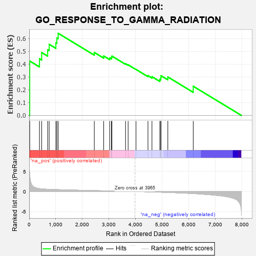
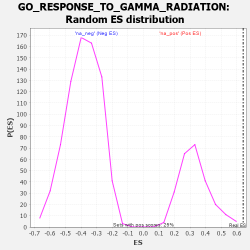

| | | Dataset | 7d |
| Phenotype | NoPhenotypeAvailable |
| Upregulated in class | na_pos |
| GeneSet | GO_RESPONSE_TO_GAMMA_RADIATION |
| Enrichment Score (ES) | 0.6402767 |
| Normalized Enrichment Score (NES) | 1.9461241 |
| Nominal p-value | 0.0 |
| FDR q-value | 0.079000525 |
| FWER p-Value | 0.421 |
Table: GSEA Results Summary

Fig 1: Enrichment plot: GO_RESPONSE_TO_GAMMA_RADIATION
Profile of the Running ES Score & Positions of GeneSet Members on the Rank Ordered List
| PROBE | GENE SYMBOL | GENE_TITLE | RANK IN GENE LIST | RANK METRIC SCORE | RUNNING ES | CORE ENRICHMENT | | 1 | H2AX | | | 20 | 4.738 | 0.4240 | Yes |
| 2 | BAX | | | 387 | 0.711 | 0.4419 | Yes |
| 3 | WRN | | | 469 | 0.649 | 0.4902 | Yes |
| 4 | XRCC6 | | | 694 | 0.560 | 0.5124 | Yes |
| 5 | ELK1 | | | 752 | 0.545 | 0.5543 | Yes |
| 6 | MEN1 | | | 1003 | 0.483 | 0.5663 | Yes |
| 7 | YAP1 | | | 1041 | 0.475 | 0.6044 | Yes |
| 8 | RAD51 | | | 1090 | 0.466 | 0.6403 | Yes |
| 9 | KDM1A | | | 2447 | 0.237 | 0.4910 | No |
| 10 | ATR | | | 2800 | 0.183 | 0.4632 | No |
| 11 | BRCA2 | | | 3024 | 0.146 | 0.4483 | No |
| 12 | TIGAR | | | 3091 | 0.138 | 0.4524 | No |
| 13 | GPX1 | | | 3109 | 0.135 | 0.4624 | No |
| 14 | CBL | | | 3621 | 0.056 | 0.4032 | No |
| 15 | HSF1 | | | 3718 | 0.039 | 0.3946 | No |
| 16 | PARP1 | | | 4014 | -0.010 | 0.3584 | No |
| 17 | ERCC6 | | | 4464 | -0.087 | 0.3097 | No |
| 18 | GATA3 | | | 4614 | -0.120 | 0.3018 | No |
| 19 | TLK2 | | | 4909 | -0.179 | 0.2810 | No |
| 20 | XRCC5 | | | 4946 | -0.187 | 0.2933 | No |
| 21 | PRKDC | | | 4955 | -0.189 | 0.3093 | No |
| 22 | ATM | | | 5210 | -0.249 | 0.2998 | No |
| 23 | EGR1 | | | 6165 | -0.527 | 0.2272 | No |
Table: GSEA details [plain text format]

Fig 2: GO_RESPONSE_TO_GAMMA_RADIATION: Random ES distribution
Gene set null distribution of ES for GO_RESPONSE_TO_GAMMA_RADIATION